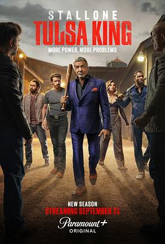

7.9
塔尔萨之王 第三季
Tulsa King Season 3
2025
美国
评分 7.9
导演:
克雷格·齐斯克（Craig Zisk） / Jim McKay / Kevin Dowling …（多位导演）
演员:
西尔维斯特·史泰龙 / 克里斯·卡尔多维诺 / 克雷格·卡斯塔尔多 / 贝拉·希思科特 / 塞缪尔·杰克逊 / 汤姆·约翰逊 / 布莱恩·克恩
类型:
剧情,犯罪
剧情简介
前纽约黑帮骨干德怀特·曼弗雷迪（西尔维斯特·史泰龙 饰）出狱后被派往塔尔萨，从一个孤身的新手开始，拼凑起自己的地盘与势力。在第三季中，他的帝国面临迄今最危险的一役——老牌家族邓迈尔家族入侵。镜头在夜幕下的塔尔萨街头展开：霓虹灯下，德怀特在酒吧后门听取情报；在宽敞办公室里，他看着被称为“暗狼”的敌人冷笑。邓迈尔家族财力雄厚、手段狠辣，他们无视旧世界秩序，挑战德怀特多年累积的王座与尊严。与此同时，德怀特的核心团队不仅要守住钞票、地盘，还要守住“家人”——他的司机泰森、合伙人博迪、酒馆老板米奇，他们一次次在任务中面临背叛与抉择。车库里的一把手枪落下，会议室的一杯威士忌溅出裂痕：这是兄弟间的裂缝，也是权力的裂缝。本季拟真地描绘“黑帮转型＋家庭纷争＋地域争夺”三重冲突：德怀特要在塔尔萨保住合法与非法之间微妙的平衡，他不再只是“老派狠角色”，更面对新的商业合约、新的盟友、新的背叛。出狱这一步，看似开始得晚，却也更危险。如果你倾向于“黑帮权谋＋地域文化＋老将归来”的类型剧，那么这一季将带你直面权力的骨架、兄弟的义气、时代的变迁。